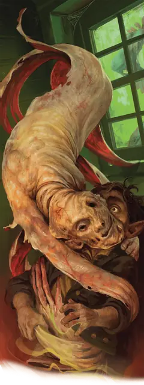

Бескостный
Boneless
Средняя Нежить, Хаотичная Злая

Класс Защиты 12 Инициатива +2 (12)
Хиты 22 (4к8 + 4)
Скорость 30 футов
| мод | спас | ||
|---|---|---|---|
| СИЛ | 15 | +2 | +2 |
| ЛОВ | 14 | +2 | +2 |
| ТЕЛ | 12 | +1 | +1 |
| мод | спас | ||
|---|---|---|---|
| ИНТ | 1 | −5 | −5 |
| МДР | 10 | +0 | +0 |
| ХАР | 1 | −5 | −5 |
Сопротивление урону Дробящий
Иммунитеты Яд; Истощение, Отравленный
Чувства Тёмное зрение 60 футов, пассивное Восприятие 10
Языки знает Общий, но не говорит
Опасность 1 (200 опыта; БВ +2)
Особенности
Похищение. Бескостный может не тратить тратить дополнительные футы перемещения при перемещении Схваченного им существа.
Податливость. Бескостный может проходить через пространство шириной всего 1 дюйм, не тратя на это дополнительное перемещение.
Действия
Удушающие объятия. Бросок рукопашной атаки: +4, досягаемость 5 фт. Попадание: 7 (2к4 + 2) Дробящего урона. Если цель — существо Среднего размера или меньше, она Схвачено (Сл освобождения от захвата 12). Пока захват не окончен, цель также Ослеплена, Опутана, задыхается и получает 7 (2к4 + 2) Дробящего урона в начале каждого хода бескостного. Бескостный может держать в удушающих объятиях только одно существо за раз и не может совершать это действие снова, пока захват не окончен.
Бонусные действия
Раскрытие плоти (1/день). Спасбросок Мудрости: Сл 11, все существа в пределах 30 футов, видящие бескостного. Провал: Цель Испугана. Провал или успех: Бескостный перемещается на расстояние вплоть до своей Скорости, не Провоцируя атак.
Бонус мастерства +2
Среда обитания Любая
Сокровища Отсутствуют
Бескостный
Снятая с костей плоть, жаждущая убивать
Бескостные — это ожившая кожа раздавленных или освежёванных Гуманоидов. Они восстают из трупов тех, кто встретил особо жестокую кончину — сдирание кожи, раздавливание или людоедство. Эти ненавидящие всё оболочки могут искать возмездия, удушая и сдавливая жертв своими податливыми телами. Иногда некроманты создают бескостных, чтобы те служили им бесшумными убийцами.
Злобные заклинатели могут приказать бескостному свисать подобно гротескному стягу или облечь собою скелета или зомби. Когда враги приближаются, бескостный отделяется от насеста или союзника-нежити и устремляется им навстречу.